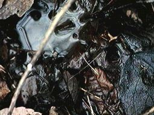
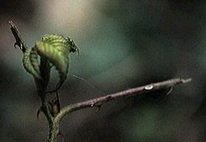

| 五月山西斜面の観察ポイント |
|---|

|
テンのふん 石の上などの目立つ場所によくふんをしています。 ふんのなかに、よくカキの種が入っています。くだものも大好きです。 |
|
シカのねどこ 森の中の広い空間や日あたりのよい場所に見られます。日あたりのよい場所では、お昼寝をするようです。 |

|
|  |
シカのぬた場 しめった場所で体をこすりつけます。 よく見ると、上の「ねどこ」と同じように毛があります。 |
|
シカの食べたあと(1) イヌツゲを食べたあとです。池田周辺では、アオキ・ツゲ・ササ・リョウブ・ソヨゴが食べられるようです。 |

|

|
シカの食べたあと(2) イヌツゲを食べたあとです。ウサギの食事のあとは、ナイフで切ったようにするどいのですが、シカはひきちぎったようなあとになります。 |
|
シカの食べたあと(3) クサイチゴを食べたあとです。やはり、ひきちぎった感じがします。アセビ・ナギ・マキなどは食べないそうですが、そのほかのものはいろいろ食べているようです。 |  |

|
シカのふん シカのふんです。山に入ると目につきます。ウサギのほうが多いようです。 |
|
あれ…? もっと用意しておいたのですが、写真が行方不明です。 きっとお正月には、見つかるでしょう。 でも、見つかりませんでした。また、このような動物(どうぶつ)の生活(せいかつ)のようすを知(し)るのに便利(べんり)な図鑑(ずかん)を作っておきます。 |

|
「メモ」へ
「観察ポイントの紹介」のページにもどる
「北摂の生き物」のページにもどる